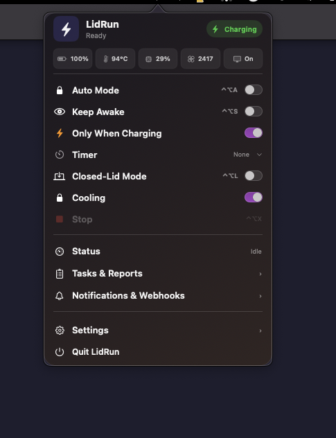

Auto Mode
Tự giữ máy thức khi phát hiện Claude Code, Cursor, Docker, Ollama hoặc process bạn chọn.
MIỄN PHÍ · MÃ NGUỒN MỞ · CHẠY CỤC BỘ
Một tiện ích menu bar nhỏ gọn giữ Mac thức khi Claude Code, Cursor, Docker hoặc Ollama đang làm việc — với giới hạn pin và nhiệt độ tích hợp.

NHỎ GỌN, NHƯNG ĐỦ DÙNG
Tự giữ máy thức khi phát hiện Claude Code, Cursor, Docker, Ollama hoặc process bạn chọn.
Giữ phiên làm việc khi đóng nắp và dùng màn hình ngoài. Hiệu quả còn phụ thuộc phần cứng và nguồn điện.
Tự dừng theo pin yếu, mất sạc hoặc nhiệt độ nguy hiểm. Hiển thị CPU, pin, nhiệt và quạt thực.
Thông báo macOS cùng webhook cho Discord, Slack, Teams và endpoint JSON riêng.
Điều khiển Auto Mode, Keep Awake, Closed-Lid và Stop mà không rời bàn phím.
Nhật ký JSONL và báo cáo tuần nằm trên máy bạn. Không analytics, không tài khoản.
CÀI TRONG 1 PHÚT
Dán lệnh này vào Terminal. Script tải bản mới nhất, kiểm tra SHA-256 rồi cài vào Applications, không có cảnh báo Gatekeeper.
curl -fsSL https://vuluu2k.github.io/LidRun/install.sh | bashKéo LidRun.app vào thư mục Applications.
macOS sẽ chặn vì bản miễn phí chưa được Apple notarize. Bấm Done.
Vào System Settings → Privacy & Security, bấm Open Anyway. macOS sẽ ghi nhớ lựa chọn.
FAQ
Có. Không gói trả phí, không giới hạn thời gian và không thu thập dữ liệu sử dụng.
Bản tải miễn phí chưa được notarize bằng tài khoản Apple Developer trả phí. Dùng lệnh cài Terminal, hoặc System Settings → Privacy & Security → Open Anyway ở lần đầu.
Không thể đảm bảo trên mọi cấu hình. macOS, nguồn điện, màn hình ngoài và phần cứng có thể ảnh hưởng. Hãy thử với công việc không quan trọng trước.
SHA-256: d0d65731…e50